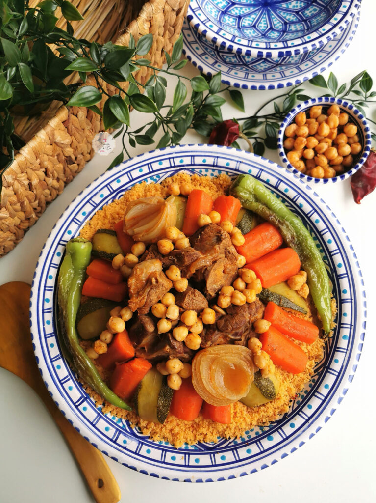

Home
Couscous

How do you make a good couscous?
Tunisian couscous is a classic traditional dish that is comforting and flavorful. The couscous is steamed and served with meat, vegetables, and chickpeas.
What is Couscous?
Couscous is granules of semolina that are steamed and served. It is a well-known dish in North Africa and is especially famous in Tunis, Algeria, Morocco, Libya, and Mauritania. Each country prepares couscous differently. In Tunis, the couscous is usually steamed and served with meat, vegetables, chickpeas and is typically spicy. The color of the couscous is generally orange to red depending on the amount of meat broth and harissa that is added to it.
Ingredients:
- Potatoes: You will need about two medium-sized potatoes. First, you will wash and peel the potatoes. Then cut the potatoes lengthwise in half. To prevent the potatoes from turning black while you prep the other ingredients, soak them in a bowl of cold water and salt.
- Carrots: Wash and peel the carrots. Then cut them lengthwise in half.
- Pumpkin: I used a small pumpkin for this recipe. You will want to slice the pumpkin into quarters and remove the seeds. See the photo above for size reference. If you can’t find a pumpkin, you can substitute it with squash or kabocha instead.
- Chilli Peper: Tunisian couscous is usually spicy and includes chili pepper or harissa. I have omitted the chili pepper. However, if you wish to use it, there is no need to prep it. You just add it to the pot as is.
Steps
- in a cooking pot over medium-low heat, add the olive oil and allow it to get hot. Then add the onions and garlic and seer for 3-5 minutes or until the onions are translucent in color.
- in a cooking pot over medium-low heat, add the olive oil and allow it to get hot. Then add the onions and garlic and seer for 3-5 minutes or until the onions are translucent in color.
- Afterward, add all the vegetables, tomato paste and pour boiling water into the cooking pot until all the vegetables are covered in water. Next, cover the cooking pot with the lid and allow the pot to simmer over medium-low heat for 15 minutes. Now check the doneness of the vegetable. You can do this by inserting a fork into each vegetable. If the fork easily slides through the vegetable, it means it is cooked. Remove any cooked vegetable and set it aside for later.
- Then, cook the meat for another 15 minutes and recheck on the remaining vegetables. Remove any cooked vegetables, add the chickpeas and cook the meat for another 15 minutes with the lid on. Once the meat is cooked, separate the meat and chickpeas from the chicken broth and set them aside for assembling.